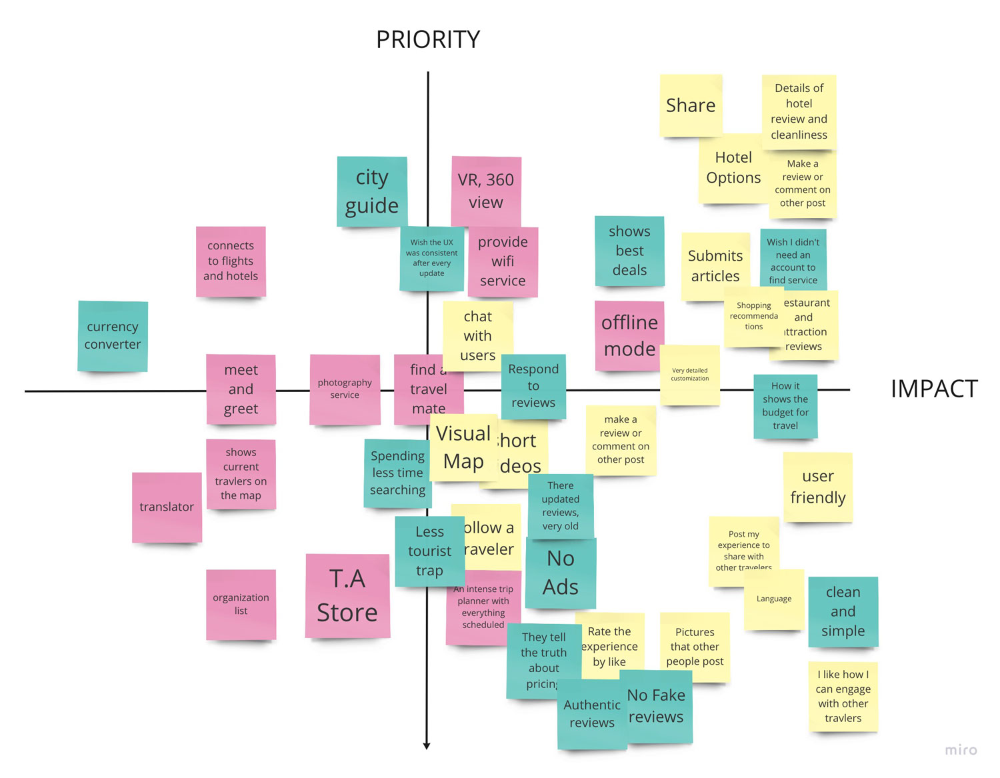
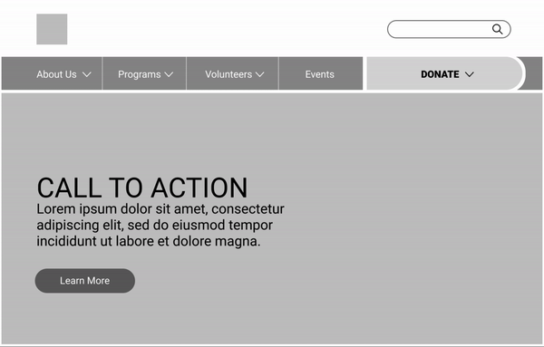
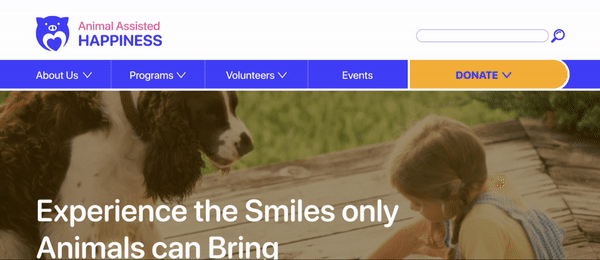

mylan le.
ux/ui designer & illustrator

wayfarer.
Role: UX Designer
Task: Research, User Testing, Wireframing, Prototyping
Tools: Adobe XD, InVision, Miro
Timeline: 1.5 months
Collaborator: Mylan Le
background.
People who backpack have been surrounded by a variety of travel information whether it may be from books, online travel applications, to high-end custom travel agencies. However many have an experience that these resources are generic and lack authenticity which makes it difficult for backpackers to have a more customizable and adventurous experience.
user research.
Originally during my first round of interviews, I realized I was too broad and only focused on the general idea of how they plan their trip. I decided to dive deeper and do another round of interviews specifically about backpacking. I began by conducting around 10-12 interviews in order to figure out what behavior patterns were trending and how they plan their trip.
There was a trend on individuals who express that planning the type of activities to do according to them and their group’s interest is very important and what kind of resources they want to rely on, specifically talking to people to find out their experiences.

I put out multiple surveys (through Google Forms and Survey Monkey) with total 120 participants from different culture and background. Based on the quantitative and qualitative data, I planned to dive deep into our research to identify and understand the user’s pain point.
The surveys captured great quantitative results with some trending answers. I learned that 42.4% of users (14 people) prefer to plan their trip by discovering what other travelers have experience. I also believe that the 36.4% (12 people) that picked online blogs plays a similar role of discovering new finds that were personally posted by travel bloggers. I also discovered that 55.6% of user’s (20 people) major pain point is planning out what to do for their trip.


gathering the data.
I gathered my data and created an affinity diagram. There was alot of information held for each intervieww, so I simplified and picked out similiarities between each person. I separated the diagrams into 6 categories. Here's some key points I learned:
• When they are planning they prefer to use resources that are more personal to guide them such as talking to other or reading travel blogs.
• Budgeting and figuring out the cost for travels when traveling solo or with a group.
• Want to be able to have an organized itinerary suited for solo or group backpacking.

so what's the problem then?
I have observed that backpackers find it difficult to search the plans of their particular interests through the internet, specifically travel agencies, because it does not give many unique options and many are too generic and lack authenticity. How can I provide an app that brings an immersive and customized destination for all backpackers that is shared between other people?
meet michael.
Michael is an engineer who is very spontaneous, self-driven, and ambitious. He enjoys the outdoors and spends most of his free time hiking and rock climnbing with friends. He also submits monthly travel articles of his past experiences to engage with his followers. He wants to plan a backpacking trip soon and ideally he would want to see many diverse places and absorb local culture and tastes. However, he is struggling to find a trip and would like to talk to somebody for suggestions.
competitive analysis
Worldpackers is a community based on collaboration and honest relationships that make travel more accessible to those seeking a profound cultural experience. Through an online platform, WorldPackers connect travelers - looking to exchange their skills for accommodation - with incredible hosts from all around the world. People can travel with a collaborative mindset and share valuable experiences to one another.
• Competitive Advantage: WorldPackers provides living accommodations for travelers/backpackers while being on a budget; provide articles posted by travelers so others can get a more personal insight of what they will be doing, dominate the market in South America.
• General Notes: Overall, the website and the service for WorldPackers is very trustworthy and people rely on this company to work and travel simultaneously. This company provides a wide range of travel experiences whether it may be teaching abroad, learning to convert to a nomad lifestyle, or exposing to diverse cultural experience. This company provides budget free options, personal tips posted by experiences travelers, and solo traveling. However, many travelers have experiences times where the travel plans hosted by WorldPacker are very disorganized especially with classes. This leads to where the travelers feels that they aren’t making much of an impact for children.
brainstorming.
After doing a competitive analysis, I wanted to priotize what needed to be in app, Wayfarer, by doing a prioritization matrix.
• I learned that it’s very important that the users share their experiences so that travelers can have more insight and what they will be expecting for their trip. Something to consider is a communication platform.
• I need to make sure the user experience is very friendly, simple, and clean. It can increase customer loyalty and engagement.
• I believe that when searching, ratings are very crucial for travelers. It’s very feasible in user experience and will make a big impact on decision.
storyboard.
After getting the goal down for the app, I came up with a user scenario for Michael.
TLDR: He wants to find a backpacking trip but the internet isn't giving him many options. His friend suggested an app called, Wayfarer that let's him engage with other travelers and their experiences. Feeling hopefully he downloads and at the end, he was able to find an adventurous trip. He goes on it and is very happy! :)

user flow.
In order for the user to get and understand the full experience that Wayfarer has to offer, I decided to go with an onboarding phase (with three screens) before having the user jump straight into the homepage of the app. After the onboarding, the user will need to sign-up in order to communicate with other backpackers and to be able to post their experiences as well such as photos, blogs, and videos.

The main goal for Michael is to find the best backpacking trip shared by another traveler. Here is the user flow for searching and browsing Wayfarer.
Not only Michael can search for trip ideas from engaging with other backpackers, he can also share his experiences as well.
lo-fi prototyping.
Then we transferred our sketches into a digital lo-fi wireframe. After user testing, we received alot of feed. We wanted to make sure we wanted to emphasize:
• The "Donation" button. Since the organization is 100% donation based, we believe that making this cateogory stand out is most was important.
• The "Mission Statement". It's important for the user to know what the organization is about, and we believe in their old website design, it was difficult for users to understand what their goal/mission was. We want to make sure in this new re-design, we utilize the white space, making text easier to breathe and read.
• The "Calendar/Events Category". The navigation experience for the calendar cateogory from the old website was very outdated and confusing for the user because of the infiinite scroll making them feel lost. We wanted to use a card UI design layout to make it accessible to distinguish each event.
Check me out for the Lo-Fi InVision Link :)
style tile.
I took the role in designing the whole UI style for the website. We decided to keep the main color of purple, but make it more vivid, along with other colors as well such as yellow and pink. We want the color palette to express a sense of playfulness, happiness, and engagement. Some other changes we made that we believe will help represent AAH are:
• Redesigning the logo: The old logo was hard to visualize and the quality was low-res. We simplified the logo to make it feel very wholesome and happy.
• Font change: As much as we all love Comic Sans, it's very outdated. However, we decided to keep the "rounded style" and used SF Pro Rounded which expresses a more playful yet simple style.
• Icon design: Icons from the old website was very consistent and lacked in style. The new AAH icons are stylize with more expression and consistency.
hi-fi prototyping.
Navigation: The primary navigation is a simple dropdown for the secondary nav. To make the "Donation" category stand out, I made it yellow and button size and style more so it is more prominent.
Browsing: When the user lands on the homepage, we make sure that what they see first is eye-catching and engageful.
• Users and quickly learn what AAH's mission and a brief overview of what the organization is about in the homepage.
• The homepage focuses on how much impact AAH has given towards the community including articles, statistics (volunteer hours, visits, etc.), and testimonials who had experiences with the organization in the past. If users wants to learn more, they navigate to the "About Us" section.
• Events are easily organized into cards and can be filtered out by date and type of event.
• Volunteer Orientation and be found through events or under the "Volunteer" cateogory.

Donating: In AAH's old website, they provided with multiple ways to donate. We still wanted to keep that in the new website, but wanted to make sure the potential donor is provided with all the information before they decided to give payment and to be able to trust that their money is being sent to the organization without hassle. Such as:
• How much impact a donor a give.
• An overview of each donation option and how that money will affect that that area.
• Giving multiple payment options such as PayPal and Venmo, who are trustworthy payment providers.

Check me out for the Hi-Fi InVision Link :)
conclusion & future development.
We believe the following should be addressed in future development:
• Reach out to Animal Assisted Happiness and present our design.
• More in-depth user task pages and responsive design pages (volunteer sign up forms, animal profiles).
• In-depth personalized UI development (icons, visuals, button animations).
• More user testing and reiterations.
• KPI measurements such as the amount of donations made/ amount of $ raised, % change of volunteer orientation sign-ups, % change of program-services requested
thank you! :)
If you have any questions/comments regarding to this case study, feel free to email/contact me!